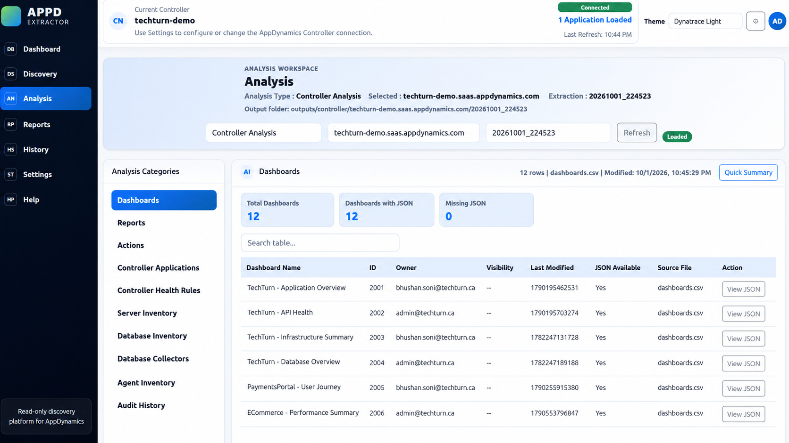
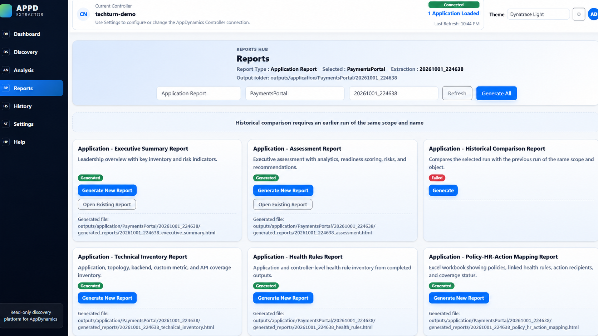

Turn AppDynamics discovery into a structured migration plan.
A read-only discovery and assessment platform built to inventory AppDynamics environments, organize configuration data, identify migration gaps, and generate migration-focused reports before moving monitoring to a target observability platform such as Dynatrace.
Why I built it
Enterprise monitoring migrations often begin with a deceptively difficult question: what exactly exists in the current AppDynamics environment? Applications, tiers, nodes, business transactions, health rules, dashboards, agents, backends, database dependencies, policies and configuration can be distributed across many areas of the controller.
Inventory the environment
Build a repeatable inventory instead of manually navigating application by application.
Collect configuration data
Use controller and application extraction modes to collect structured monitoring and configuration data.
Find gaps and risk
Review coverage, ownership, rule quality, missing data, dependencies and migration readiness.
What the platform can discover
The extractor is designed to build a migration-ready inventory across application topology, monitoring configuration and operational dependencies — not just produce a raw export.
Application topology
Applications, tiers, nodes, business transactions, service endpoints and backend dependencies.
Agent & infrastructure coverage
App Agent and Machine Agent inventory, node coverage, infrastructure relationships and database dependencies.
Alerting configuration
Health Rules, policies, actions, action suppressions and migration-readiness gaps.
Detection & configuration
Transaction detection, backend detection, JMX configuration, data collectors and related monitoring objects.
Dashboards & reporting
Dashboard inventory, technical inventory, executive summary and targeted assessment reports.
Migration assessment
Data completeness, readiness scoring, risk findings, estimated migration effort and recommendations.
Migration workflow
The goal is not to copy monitoring technical debt into the target platform.
Generated assessment reports
The reporting layer turns raw extraction output into views that can be consumed by observability engineers, migration teams, platform owners and stakeholders.
Executive Summary
High-level inventory, readiness, architecture, key findings and recommendations.
Technical Inventory
Application topology, tiers, nodes, transactions, backends and detailed inventory.
Health Rules
Coverage, policy/action relationships, scope, severity and rule-readiness analysis.
Infrastructure
Host and node distribution, backend classification and infrastructure intelligence.
Audit & Governance
Policy coverage, actions, ownership, audit data, naming and governance gaps.
Migration Readiness
Readiness by area, missing-data impact, effort indicators and prioritized recommendations.
Platform & report screenshots
The screenshots below use sanitized TechTurn demo data. Click any image to open the full-size version.
Extraction & discovery platform





Assessment & migration-readiness reports


Planning an AppDynamics migration?
I am continuing to expand this platform toward deeper AppDynamics-to-Dynatrace mapping, migration planning, configuration comparison and automated validation. For collaboration or consulting discussions, connect with TechTurn.
Demo data only. AppDynamics and Dynatrace are trademarks of their respective owners. This page is not an official product page of either vendor.